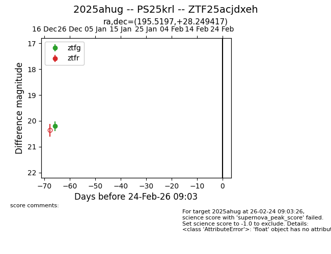
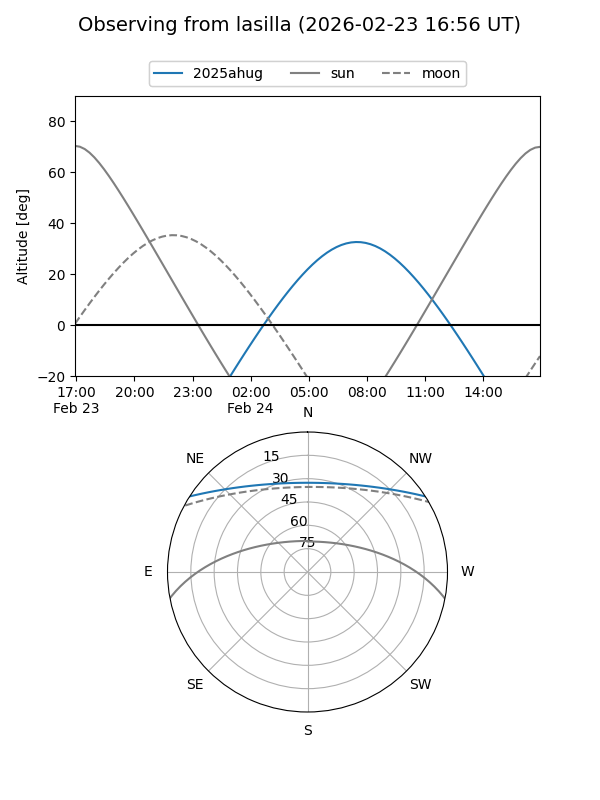
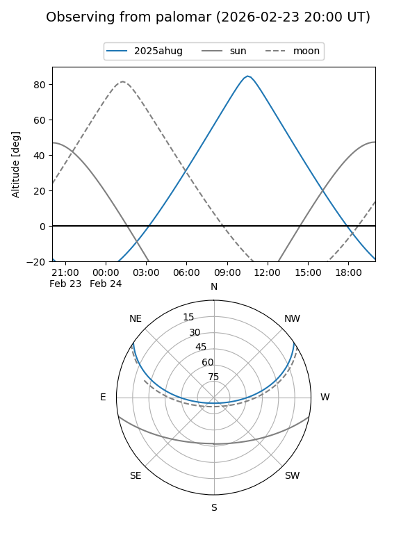

2025ahug
Target 2025ahug at 2025-12-31 18:00
Aliases and brokers:
FINK: link
Lasair: link
ALeRCE: link
TNS: link
YSE: link
alt names
ZTF25acjdxeh (ztf,fink_ztf)
2025ahug (tns,yse)
PS25krl (panstarrs)
Coordinates:
equatorial (ra, dec) = 195.5197,+28.24942
equatorial (HMS+DMS) = 13:02:04.73,+28:14:57.90
galactic (l, b) = (58.9984,+87.39132)
Flags:
Photometry:
last ztfg=20.20
1 ztfg detections
Lightcurve

Visibility


Additional plots